import rasterio as rio
import geowrangler.raster_process as raster_processRaster Processing Tutorial
A basic introduction to raster processing

Summary
Cropping rasters based on the borders of a polygon. Usage of this function assumes an input raster and a geodataframe from which to extract bounds. There is also an option to crop multiple geometries at once (e.g., crop raster using bounds of each cell in a grid).
How does it work?
Returns a subset of a rasterio dataset. This function assumes that the bounding coordinates for the desired cropped rasters are present in the input geodataframe’s geometry column.
query_window_by_polygon(raster, output_folder, gdf, mask)
For cropping a raster based on boundaries of a single polygon. A technical step-by-step explanation of how query_window_by_polygon works is detailed in the cell blocks below.
| type | default | optional/ required | details | |
|---|---|---|---|---|
| raster | String | none | required | local filename of raster or open raster dataset |
| output_folder | String | none | required | file path where cropped raster outputs will be saved |
| gdf | GeoDataFrame | none | required | polygon that will become basis of boundaries for cropping |
| mask | Boolean | none | required | True- Assign NULL to areas outside borders of a non-rectangular polygon False- Retain values outside borders of a non-rectangular polygon |
- Define the function and its arguments.
def query_window_by_polygon(
input_raster: Union[str, DatasetReader, PosixPath],
output_path: str,
geometry: Polygon,
mask=False,
) -> None:- Check if raster is specified as PosixPath and convert to String.
if isinstance(input_raster, PosixPath):
input_raster = str(input_raster)- Check if raster is path to a file or an open raster dataset.
if isinstance(input_raster,str):
input_dset = rio.open(input_raster)
else:
input_dset = input_raster- Get the window bounds (left, right, top, bottom coordinates) from polygon geometry and check if it has the correct number of elements.
window_bounds = geometry.bounds
assert (
len(window_bounds) == 4
), - Unroll window bounds.
left, bottom, right, top = window_bounds- Open raster as input.
with rio.open(input_raster) as input_dst:- Get profile of input_dst:
input_profile = input_dst.profile- Specify window and query subset.
window = rio.windows.from_bounds(left, bottom, right, top, input_dst.transform)
subset = input_dst.read(window=window)- Get the shape of the output subset.
number_of_bands, height, width = subset.shape- Get the transformation of the subset based on the window.
win_transform = input_dst.window_transform(window)- Update metadata for the output.
output_profile = input_profile.copy()
update_params = {
"count": number_of_bands,
"height": height,
"width": width,
"transform": win_transform,
}
output_profile.update(update_params)- Write image to output file.
with rio.open(output_path, "w", **output_profile) as output_dst:
output_dst.write(subset)
output_dst.colorinterp = input_dst.colorinterp- Apply mask according to shape of the polygon.
if mask:
with rio.open(output_path) as dst:
masked_image, masked_transform = rio.mask.mask(dst, [geometry], crop=True)
with rio.open(output_path, "w", **output_profile) as output_dst:
update_params = {
"height": masked_image.shape[1],
"width": masked_image.shape[2],
"transform": masked_transform,
}
output_profile.update(update_params)
output_dst.write(masked_image)- Return output.
return query_window_by_gdf(raster, output_folder, gdf, name_col, mask)
For cropping a raster based on boundaries of multiple polygons. A step-by-step explanation of how query_window_by_gdf works is detailed in the cell blocks below.
| type | default | optional/ required | details | |
|---|---|---|---|---|
| raster | String | none | required | local filename of raster or open raster dataset |
| output_folder | String | none | required | file path where cropped raster outputs will be saved |
| gdf | GeoDataFrame | none | required | polygon that will become basis of boundaries for cropping |
| name_col | String | none | optional | column name to base output filepath on. if left blank, outputs will be name sequentially as ‘output_0.tif’ |
| mask | Boolean | none | required | True- Assign NULL to areas outside borders of a non-rectangular polygon False- Retain values outside borders of a non-rectangular polygon |
- Define the function and create a copy of the geodataframe.
def query_window_by_gdf(
input_raster: Union[str, DatasetReader, PosixPath],
output_folder: str,
gdf,
name_col=None,
mask=False,
) -> None:
gdf = gdf.copy()- Check if the coordinate reference systems of the raster and geodataframe match.
with rio.open(input_raster) as dst:
assert dst.meta["crs"] == gdf.crs, "input_raster and gdf CRS must match!"- Name outputs based on values from name_col.
if name_col is None:
name_col = "name"
gdf[name_col] = "output_" + gdf.reset_index().index.astype(str) + ".tif"
else:
gdf[name_col] = gdf[name_col] + ".tif"
for i, row in gdf.iterrows():
polygon = row.geometry
output_name = row[name_col]
output_path = output_folder / output_name
print(output_path)
query_window_by_polygon(input_raster, output_path, polygon, mask)Sample use case 1- Crop raster with single circular polygon
Input: - input_image - raster of 2020 Philippine population - output_folder - filepath to where output raster will be saved - circle_gdf - GeoDataFrame containining single circular polygon - mask - True- to assign NULL values to cells outside the circular polygon
Output: - cropped raster (GeoTiff) containing only values within circular polygon
Step 1: Import packages
Step 2: Load raster
input_image'../data/phl_ppp_2020_constrained.tif'raster = rio.open(input_image)show(raster.read(1), cmap="plasma", transform=raster.transform);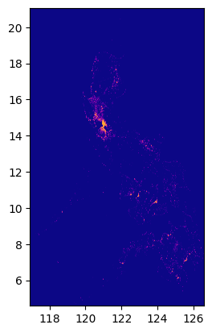
Step 3: Load polygon
circle_gdf| lat | lon | geometry | |
|---|---|---|---|
| 0 | 14.599512 | 120.984222 | POLYGON ((121.99932 14.59951, 121.99443 14.503... |
Step 4: Check if the polygon is within bounds of the raster.
fig, ax = plt.subplots(1, 1, figsize=(4, 8))
show(raster.read(1), cmap="viridis", ax=ax, transform=raster.transform)
circle_gdf.plot(ax=ax, facecolor="none", edgecolor="yellow")
ax;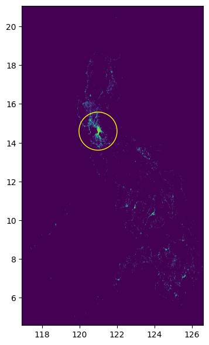
Step 5: State filepath of output folder.
output_folder = Path("../data")Step 6: Crop raster
raster_process.query_window_by_gdf(input_image, output_folder, circle_gdf, mask=True)../data/output_0.tifwith rio.open(output_folder / "output_0.tif") as dst:
fig, ax = plt.subplots(1, 1, figsize=(4, 4))
show(dst.read(1), cmap="viridis", ax=ax, transform=dst.transform)
circle_gdf.plot(facecolor="none", edgecolor="yellow", ax=ax)
print(dst.read(1))
ax;[[-99999. -99999. -99999. ... -99999. -99999. -99999.]
[-99999. -99999. -99999. ... -99999. -99999. -99999.]
[-99999. -99999. -99999. ... -99999. -99999. -99999.]
...
[-99999. -99999. -99999. ... -99999. -99999. -99999.]
[-99999. -99999. -99999. ... -99999. -99999. -99999.]
[-99999. -99999. -99999. ... -99999. -99999. -99999.]]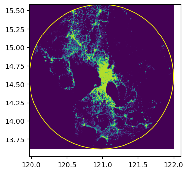
Sample use case 2- Crop raster with multiple cells from a grid
Input: - input_image - raster of 2020 Philippine population - output_folder - filepath to where output rasters will be saved - grid_gdf - GeoDataFrame containining multiple polygons (grid cells) - mask - False- no need to assign NULL values because grid cells occupy full space from image center to boundaries
Output: - multiple cropped rasters (GeoTiff) split according to grid cell polygons
Step 1: Import packages
import rasterio as rio
import geowrangler.raster_processStep 2: Load raster
input_image'../data/phl_ppp_2020_constrained.tif'raster = rio.open(input_image)
show(raster.read(1), cmap="plasma", transform=raster.transform)
Step 3: Load grid
grid_gdf| x | y | geometry | name | |
|---|---|---|---|---|
| 0 | 0 | 0 | POLYGON ((119.96913 13.61504, 120.86744 13.615... | gridxy-0-0 |
| 1 | 0 | 1 | POLYGON ((119.96913 14.48647, 120.86744 14.486... | gridxy-0-1 |
| 2 | 0 | 2 | POLYGON ((119.96913 15.35449, 120.86744 15.354... | gridxy-0-2 |
| 3 | 1 | 0 | POLYGON ((120.86744 13.61504, 121.76576 13.615... | gridxy-1-0 |
| 4 | 1 | 1 | POLYGON ((120.86744 14.48647, 121.76576 14.486... | gridxy-1-1 |
| 5 | 1 | 2 | POLYGON ((120.86744 15.35449, 121.76576 15.354... | gridxy-1-2 |
| 6 | 2 | 0 | POLYGON ((121.76576 13.61504, 122.66407 13.615... | gridxy-2-0 |
| 7 | 2 | 1 | POLYGON ((121.76576 14.48647, 122.66407 14.486... | gridxy-2-1 |
Step 4: Check if the grid is within bounds of the raster.
fig, ax = plt.subplots(1, 1, figsize=(4, 8))
show(raster.read(1), cmap="viridis", ax=ax, transform=raster.transform)
grid_gdf.plot(ax=ax, facecolor="none", edgecolor="yellow")
ax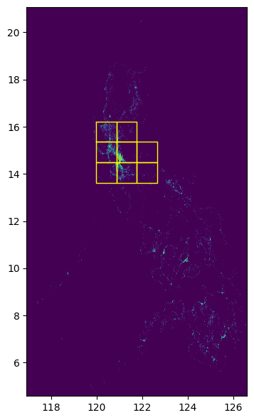
Step 5: State filepath of output folder.
output_folder = Path("../data")Step 6: Crop raster
raster_process.query_window_by_gdf(
input_image, output_folder, grid_gdf, name_col="name", mask=False
)../data/gridxy-0-0.tif
../data/gridxy-0-1.tif
../data/gridxy-0-2.tif
../data/gridxy-1-0.tif
../data/gridxy-1-1.tif
../data/gridxy-1-2.tif
../data/gridxy-2-0.tif
../data/gridxy-2-1.tiffor name in grid_gdf["name"]:
image_path = output_folder / (name + ".tif")
with rio.open(image_path) as dst:
fig, ax = plt.subplots(1, 1, figsize=(4, 4))
ax.set_title(image_path)
show(dst.read(1), cmap="viridis", ax=ax, transform=dst.transform)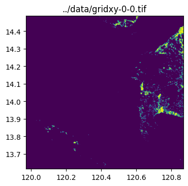
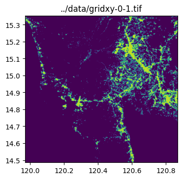
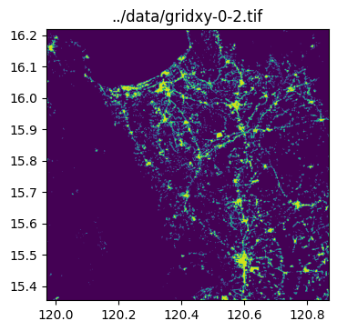
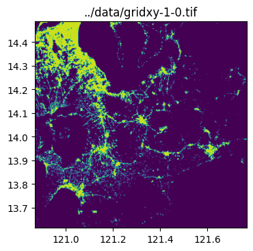
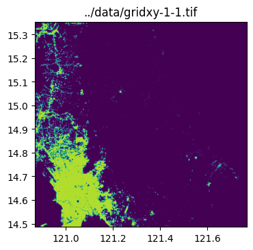
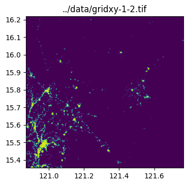
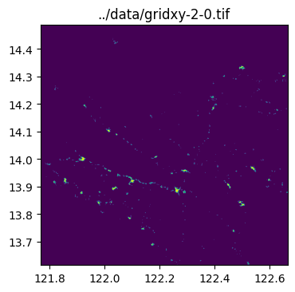
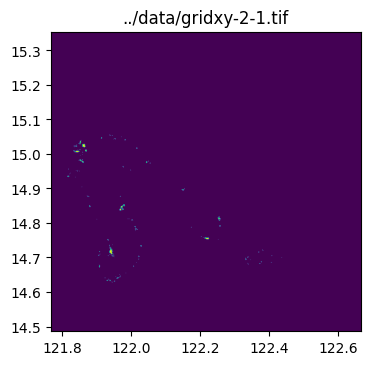